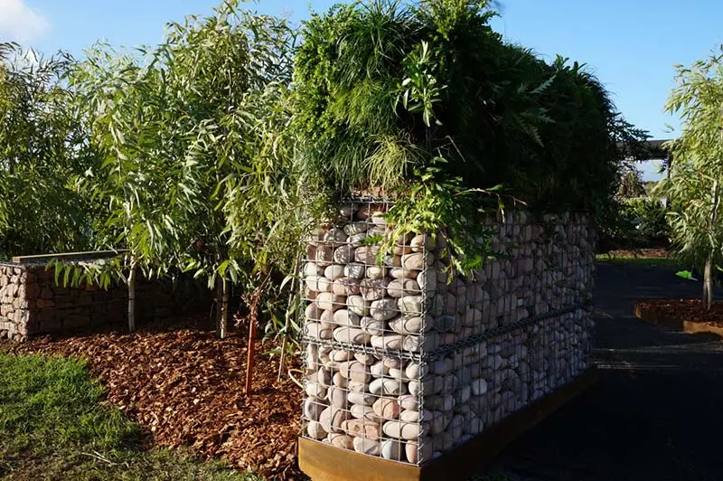
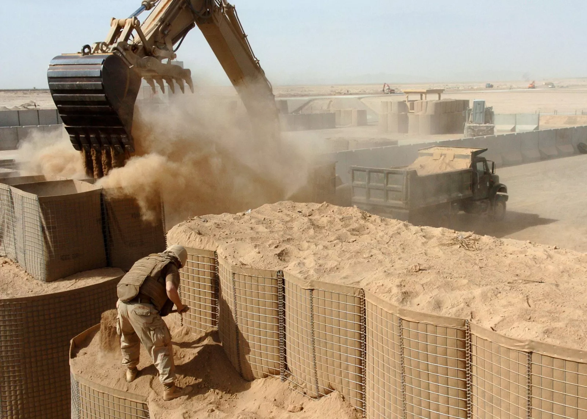

Welded Gabion Boxes
Welded gabion boxes are wire mesh containers (sizes 1×1×1 to 4×1×1 m, mesh 25–100 mm, wire Ø4.0–5.0 mm) filled with stone for erosion control, flood defense, retaining walls, and hydraulic structures. Kestrel Metal manufactures them from galvanized or PVC coated steel wire, ISO 9001-certified, with FOB Tianjin and 15–25 day lead time.
Gabion Box Specifications
Standard box sizes, wire diameters and mesh opening configurations for welded gabion boxes.
| Type | Box Size (L × W × H) | Mesh Opening | Wire Diameter | Selvedge Wire | Filling Stone |
|---|---|---|---|---|---|
| Type A — Standard | 2000 × 1000 × 1000 mm | 75 × 75 mm | 4.0 mm | 5.0 mm | 100–250 mm |
| Type B — Large | 3000 × 1000 × 1000 mm | 100 × 100 mm | 4.0 mm | 5.0 mm | 100–300 mm |
| Type C — Heavy Duty | 2000 × 1000 × 1000 mm | 50 × 50 mm | 5.0 mm | 6.0 mm | 80–200 mm |
| Type D — Half Height | 2000 × 1000 × 500 mm | 75 × 75 mm | 4.0 mm | 5.0 mm | 100–250 mm |
| Type E — Compact | 1000 × 1000 × 1000 mm | 50 × 50 mm | 4.0 mm | 5.0 mm | 80–200 mm |
| Type F — High Wall | 3000 × 1000 × 1500 mm | 100 × 100 mm | 5.0 mm | 6.0 mm | 150–350 mm |
| Type G — Narrow | 2000 × 500 × 500 mm | 50 × 50 mm | 4.0 mm | 5.0 mm | 80–150 mm |
| Type H — Extra Large | 4000 × 1000 × 1000 mm | 100 × 100 mm | 5.0 mm | 6.0 mm | 150–350 mm |
| Type I — Ultra Fine | 2000 × 1000 × 1000 mm | 25 × 25 mm | 5.0 mm | 6.0 mm | 50–150 mm |
- Wire material: high-quality low-carbon steel wire
- Coating: hot-dip galvanized or PVC coated
- Welding: automated resistance welding at each intersection
- Standard: ASTM A974 / BS EN 10223-8
- Custom box sizes and specifications available upon request
Product Information
Welded gabion boxes are rectangular wire mesh containers manufactured from high-quality steel wire, welded at each intersection to form a rigid, durable structure. These versatile units are filled with natural stone or rock to create heavy, stable modules suitable for a wide range of civil engineering and environmental applications.
Available in galvanized or PVC coated finishes, welded gabion boxes provide excellent corrosion resistance for long-term performance in harsh environments. Their welded construction offers superior strength and dimensional accuracy compared to traditional woven gabions.
Benefits
- ✓Welded mesh construction provides superior strength.
- ✓Galvanized or PVC coated for corrosion resistance.
- ✓Easy to assemble on-site with minimal tools.
- ✓Permeable structure allows natural water drainage.
- ✓Eco-friendly — uses natural stone fill materials.
- ✓Available in custom sizes on request.
Applications
Welded gabion boxes are widely used for erosion control, flood defense, coastal protection, landscaping, and architectural feature applications. Their robust construction and natural appearance make them suitable for infrastructure projects, environmental restoration, and decorative installations.
Where Gabion Boxes Are Used
Engineered for heavy-duty structural and environmental applications — from flood defense to architectural design.





Gabion Boxes - Get a Free Quote
Trusted by 30+ countries | ISO 9001 & CE Certified | Factory-Direct Supply
MOQ from 200 units | 15-day production lead time | FOB/CIF shipping terms
📞 +86 178 3238 3339 | WhatsApp available